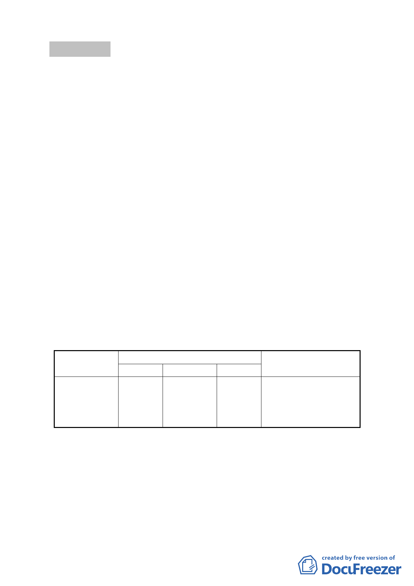

討論事項 二
案名：變更臺北市信義區松仁路及松仁路 315 巷口東北側第 3 種住
宅區為第 3 種住宅區(特)暨劃定為都市更新地區細部計畫案
案情概要說明：
一、 本案位於臺北市信義區松仁路路底，由松仁路、松仁路281
巷及松仁路315 巷所圍之完整街廓，土地面積為5,491 平方
公尺。
二、 計畫區現況：
（一） 現況範圍以住宅使用為主，一樓有一般零售、餐館等商業
使用。共有21 棟建築物，均為民國65 年以前興建完成之
4 層樓建築物，其中2 棟為921 地震災損黃單建築物。
（二） 土地使用分區為第三種住宅區。
（三） 基地內土地、建物權屬皆屬私有。
三、 計畫緣起：
本案係市府審查通過推薦之「促進都市再生 2010 年臺
北好好看」開發計畫案（老舊社區類）。
四、 計畫內容概述：
（一） 變更土地使用分區：
位置
變更內容
原計畫 新計畫
面積(㎡) 變更理由
臺北市信義 第 三 種 第三種住 5491 平 為配合「促進都市
區吳興段三 住宅區 宅區(特) 方公尺 再 生 2010 年 臺 北
小段196 等
好好看」開發計畫
17 筆土地
案
（二） 土地使用分區管制：
1. 使用強度：第三種住宅區(特)內建築物之建蔽率不得超
過45％，容積率不得超過225%。
2. 使用項目：第三種住宅區(特)之使用依「臺北市土地使
用分區管制規則」有關第三種住宅區之規定辦理。
3. 其他：本案建築基地得適用「徵求參與『促進都市再生
-6-